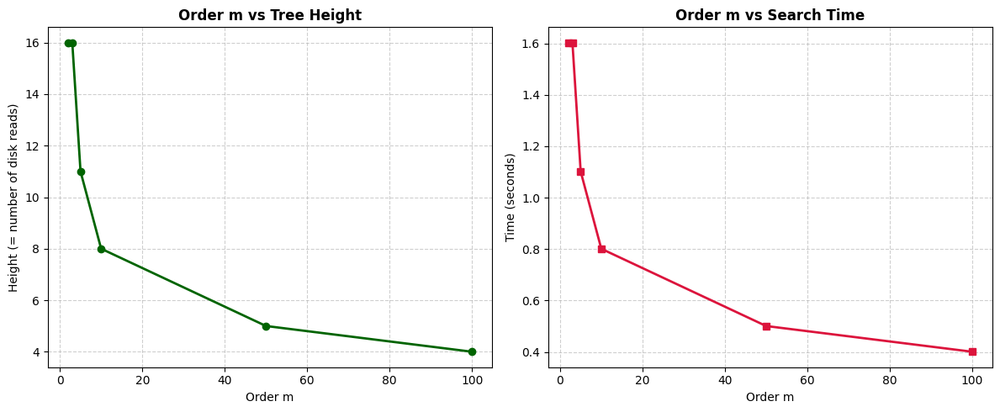

3. Performance Comparison Lab: BST vs B-Tree — Disk Read Performance#
Duration: 10 minutes
In this lab, you will experience firsthand why B-Trees are used in real-world databases instead of Binary Search Trees (BSTs).
The key question we explore:
Why does a B-Tree need far fewer disk reads than a BST to find the same record?
Lab Structure
Part |
Topic |
Time |
|---|---|---|
Part 1 |
Environment Setup — simulating disk reads |
1–2 min |
Part 2 |
BST vs B-Tree — observe the performance gap |
3 min |
Part 3 |
Student Challenge — experiment & reflect |
5 min |
Part 1: Environment Setup#
What is a “Disk Block” in a B-Tree?#
In a BST, each node holds one key. Every comparison requires loading that single key from disk into RAM — one disk access per level.
In a B-Tree of order m, each node holds up to m−1 keys. One disk access loads the entire node — all its keys — into RAM at once.
Key insight: Every time
read_disk_block()is called in a B-Tree, we load a large node containing multiple keys all at once — unlike a BST, which loads only a single key per disk access.
We simulate a disk read using time.sleep(0.1) — a 100ms delay that mimics real hardware latency.
▶ Run the cell below to set up the simulation environment.
import time
import math
import matplotlib.pyplot as plt
# Simulate reading 1 block of data from disk (100ms hardware delay)
def read_disk_block():
time.sleep(0.1)
# B-Tree simulation: calculates tree height and simulates disk reads
class BTreeSimulation:
def __init__(self, m):
self.m = m # order of the B-Tree
def get_height(self, num_elements):
if num_elements <= 0:
return 0
if self.m == 2: # BST equivalent
return max(1, math.ceil(math.log2(num_elements)))
ceil_m_half = math.ceil(self.m / 2)
if ceil_m_half <= 1:
return max(1, math.ceil(math.log2(num_elements)))
return max(1, math.ceil(math.log((num_elements + 1) / 2, ceil_m_half) + 1))
def search_simulation(self, num_elements):
height = self.get_height(num_elements)
start = time.time()
for _ in range(height):
read_disk_block()
end = time.time()
return height, end - start
print("Environment ready. Each disk read takes 0.1 seconds.")
Environment ready. Each disk read takes 0.1 seconds.
Part 2: BST vs B-Tree — The Performance Gap#
We search through a database of 100,000 records.
Case A — BST (m = 2): Each node holds 1 key. The tree grows tall → many disk reads.
Case B — B-Tree (m = 50): Each node holds up to 49 keys. The tree stays flat → very few disk reads.
▶ Run the cell and observe the difference.
N = 100000
print("=== SEARCH SIMULATION: N = 100,000 records ===\n")
# Case A: BST (order m = 2)
bst_height = math.ceil(math.log2(N))
print(f"Case A — BST (m = 2, Height = {bst_height}):")
start_bst = time.time()
for _ in range(bst_height):
read_disk_block()
end_bst = time.time()
print(f" Disk reads : {bst_height}")
print(f" Search time: {end_bst - start_bst:.2f} seconds\n")
# Case B: B-Tree (order m = 50)
btree_sim = BTreeSimulation(m=50)
b_height, b_time = btree_sim.search_simulation(N)
print(f"Case B — B-Tree (m = 50, Height = {b_height}):")
print(f" Disk reads : {b_height}")
print(f" Search time: {b_time:.2f} seconds\n")
print(f"=> B-Tree is {(end_bst - start_bst) / b_time:.1f}x faster with {bst_height - b_height} fewer disk reads.")
=== SEARCH SIMULATION: N = 100,000 records ===
Case A — BST (m = 2, Height = 17):
Disk reads : 17
Search time: 1.70 seconds
Case B — B-Tree (m = 50, Height = 5):
Disk reads : 5
Search time: 0.50 seconds
=> B-Tree is 3.4x faster with 12 fewer disk reads.
Part 3: Student Challenge#
Step 1 — Experiment with different values of m#
Change m_student to 3, 5, 10, and 100 one at a time and rerun the cell each time.
Watch how the tree height and search time change.
m |
Expected Height (N=100,000) |
|---|---|
2 (BST) |
~17 |
3 |
~11 |
5 |
~8 |
10 |
~6 |
50 |
~5 |
100 |
~4 |
# TO DO: Change the value of m_student below and rerun this cell
m_student = 3 # <-- try 3, 5, 10, 100
btree_student = BTreeSimulation(m=m_student)
h_student, t_student = btree_student.search_simulation(100000)
print(f"[YOUR RESULTS] B-Tree with order m = {m_student}")
print(f" Tree height : {h_student} levels")
print(f" Disk reads : {h_student} times")
print(f" Search time : {t_student:.2f} seconds")
[YOUR RESULTS] B-Tree with order m = 3
Tree height : 17 levels
Disk reads : 17 times
Search time : 1.70 seconds
Step 2 — Visualize the Results#
▶ Run the cell below to plot how tree height and search time change as m increases.
N_records = 50000
orders = [2, 3, 5, 10, 50, 100]
heights = []
times = []
print("Running simulation, please wait...")
for m in orders:
sim = BTreeSimulation(m)
h, t = sim.search_simulation(N_records)
heights.append(h)
times.append(t)
print(f" m = {m:3d} | Height = {h:2d} | Time = {t:.2f}s")
plt.figure(figsize=(12, 5))
plt.subplot(1, 2, 1)
plt.plot(orders, heights, marker='o', linewidth=2, color='darkgreen')
plt.title('Order m vs Tree Height', fontsize=12, fontweight='bold')
plt.xlabel('Order m')
plt.ylabel('Height (= number of disk reads)')
plt.grid(True, linestyle='--', alpha=0.6)
plt.subplot(1, 2, 2)
plt.plot(orders, times, marker='s', linewidth=2, color='crimson')
plt.title('Order m vs Search Time', fontsize=12, fontweight='bold')
plt.xlabel('Order m')
plt.ylabel('Time (seconds)')
plt.grid(True, linestyle='--', alpha=0.6)
plt.tight_layout()
plt.show()
Running simulation, please wait...
m = 2 | Height = 16 | Time = 1.60s
m = 3 | Height = 16 | Time = 1.60s
m = 5 | Height = 11 | Time = 1.10s
m = 10 | Height = 8 | Time = 0.80s
m = 50 | Height = 5 | Time = 0.50s
m = 100 | Height = 4 | Time = 0.40s

Step 3 — Reflection Question#
Think about the following question and write your answer in the cell below.
Q. When m is increased to an extremely large number (e.g., m = 1000 or m = 100,000), does the search time continue to decrease indefinitely? Why or why not?
Hint: What happens to a single disk block when it has to hold thousands of keys at once? Think about memory and hardware constraints.
Your answer:
(Double-click this cell and write your response here.)
Summary#
BST (m = 2) |
B-Tree (m = 50) |
|
|---|---|---|
Keys per node |
1 |
up to 49 |
Tree height (N=100K) |
~17 |
~5 |
Disk reads |
17 |
5 |
Search time |
~1.7 s |
~0.5 s |
A higher order m means each node stores more keys, the tree stays shallower, and fewer disk reads are needed — but only up to the point where a single node still fits efficiently into one disk block.